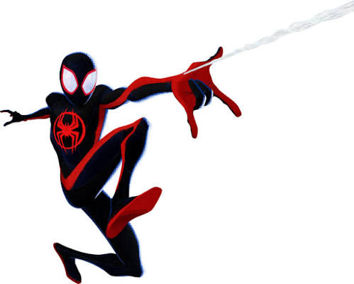
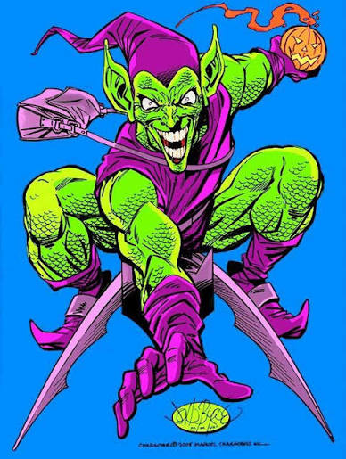
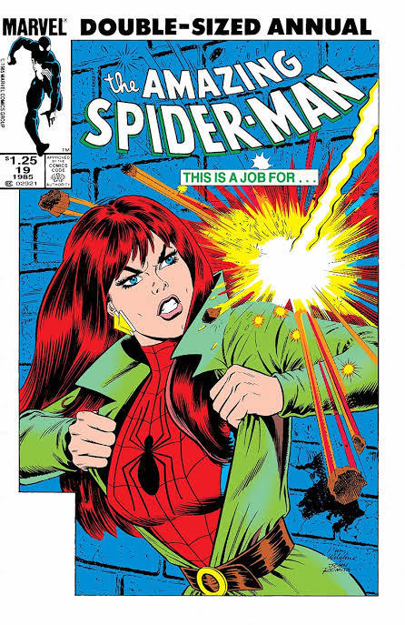

Peter Parker es un joven estudiante de secundaria que vive en Nueva York. Un día, mientras asistía a una exposición científica, fue mordido por una araña radiactiva. Esta mordedura le otorgó habilidades sobrehumanas, como fuerza, agilidad y la capacidad de trepar paredes. Decidió usar sus poderes para luchar contra el crimen y proteger a los inocentes, convirtiéndose en el superhéroe conocido como Spiderman.

El sucesor definitivo del manto que revitalizó el mito para una nueva era. Creado por Brian Michael Bendis y Sara Pichelli, Miles es un joven afrolatino de Brooklyn que adquiere poderes tras ser picado por una araña genéticamente modificada de Oscorp. Aunque al principio lidia con el miedo de no estar a la altura del legado de Peter, Miles redefine el heroísmo con un estilo propio, combinando sus habilidades clásicas con un potente bio-electrochoque («Venom Blast») y camuflaje óptico. Es la prueba viva de que cualquiera puede llevar la máscara sin importar su origen.

El Duende Verde es uno de los villanos más icónicos del universo de Spiderman. Su identidad secreta es Norman Osborn, un empresario y científico que, tras experimentar con un suero que le otorga fuerza sobrehumana y agilidad, se convierte en el Duende Verde. Con su característico traje verde y su planeador, aterroriza a Nueva York y se convierte en el archienemigo de Spiderman. Su obsesión por derrotar al héroe y su relación con la familia Parker lo convierten en un antagonista complejo y memorable.

Mary Jane Watson es un personaje central en la vida de Peter Parker y uno de los intereses amorosos más conocidos de Spiderman. Introducida como una joven extrovertida y carismática, Mary Jane se convierte en un pilar emocional para Peter, apoyándolo en sus desafíos como superhéroe. Su relación con Peter es compleja, marcada por el amor, la tensión y los sacrificios que ambos deben hacer debido a la doble vida de Spiderman. A lo largo de los años, Mary Jane ha evolucionado de ser una simple compañera romántica a un personaje fuerte e independiente, con su propia historia y desarrollo dentro del universo de Spiderman.

| Actor | Películas |
|---|---|
| Tobey Maguire | Spiderman (2002), Spiderman 2 (2004), Spiderman 3 (2007) |
| Andrew Garfield | The Amazing Spiderman (2012), The Amazing Spiderman 2 (2014) |
| Tom Holland | Spiderman: Homecoming (2017), Spiderman: Far From Home (2019), Spiderman: No Way Home (2021) |